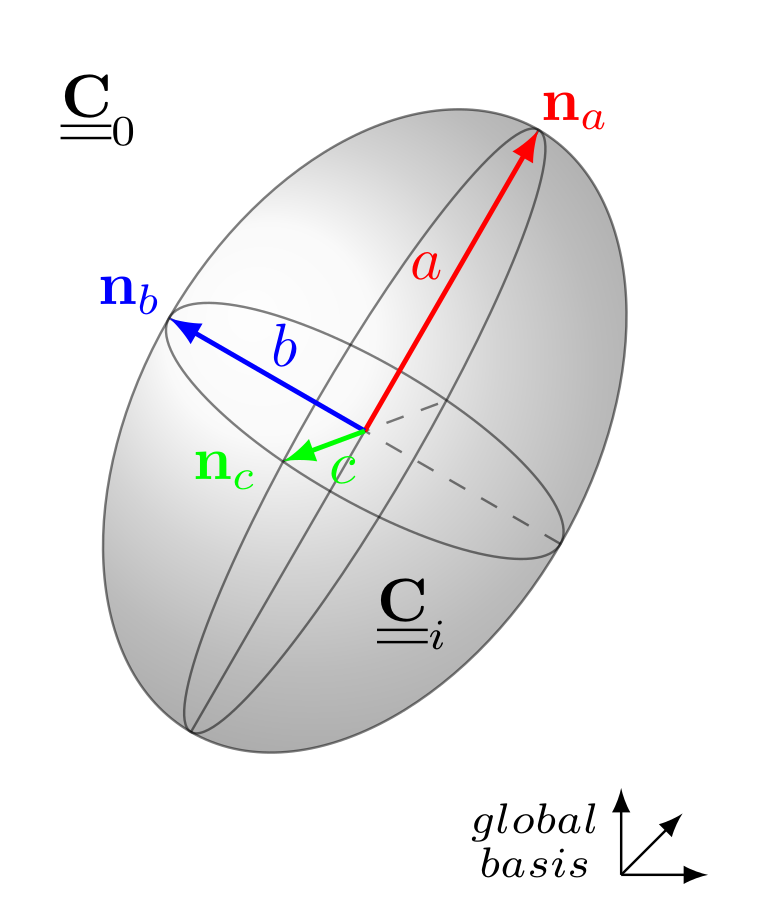
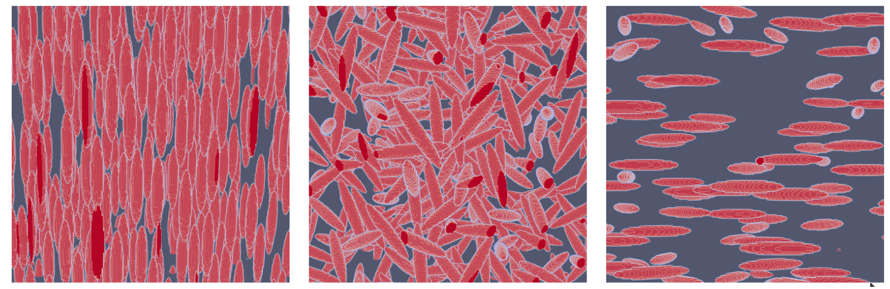
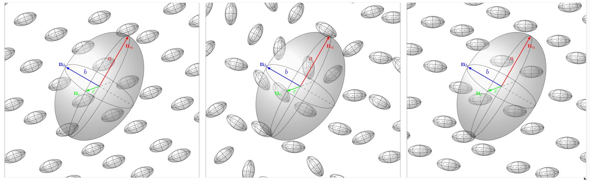
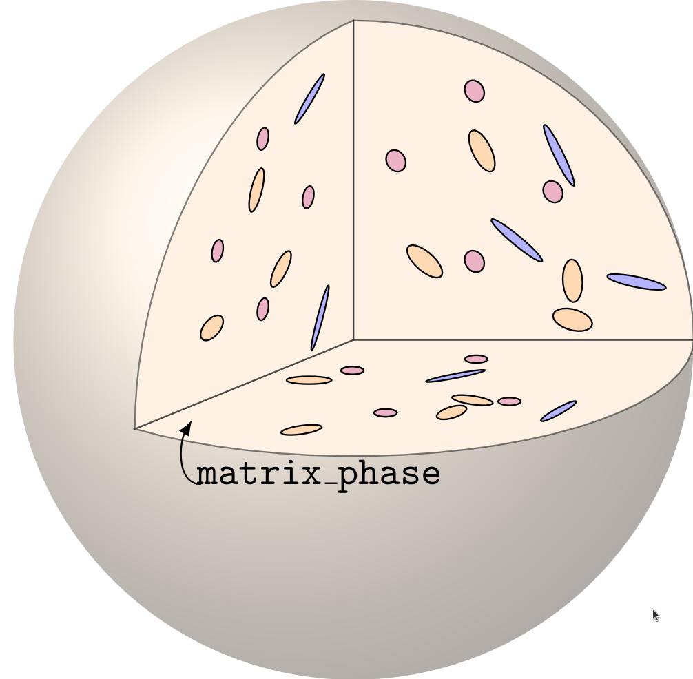

The homogenization functions are part of the namespace
tfel::material::homogenization. A specialization for
elasticity is defined:
tfel::material::homogenization::elasticity. Note that the
functionalities below are also available in the Python
module (see the doc here).
Let us consider a uniform stress-free strain \(\underline{\varepsilon}^\mathrm{T}\) applied in an ellipsoidal volume embedded in an infinite homogeneous medium whose elasticity is \(\underline{\underline{\mathbf{C}}}_0\):
\(\underline{\sigma }= \underline{\underline{\mathbf{C}}}_0:(\underline{\varepsilon }- \underline{\varepsilon}^\mathrm{T})\quad\Leftrightarrow \quad\underline{\sigma }= \underline{\underline{\mathbf{C}}}_0:\underline{\varepsilon }+\underline{\tau}, \quad \underline{\tau}= -\underline{\underline{\mathbf{C}}}_0:\underline{\varepsilon}^\mathrm{T}\)
where \(\underline{\tau}\) is the polarization tensor. The strain tensor inside the ellipsoid is uniform and given by
\(\underline{\varepsilon}=\underline{\underline{\mathbf{S}}}_0:\underline{\varepsilon}^\mathrm{T}\)
where \(\underline{\underline{\mathbf{S}}}_0\) is the Eshelby tensor. The Hill tensor \(\underline{\underline{\mathbf{P}}}_0\) gives the strain tensor inside the ellipsoid as a function of \(\underline{\tau}\) rather than \(\underline{\varepsilon}^\mathrm{T}\):
\(\underline{\varepsilon}=-\underline{\underline{\mathbf{P}}}_0:\underline{\tau},\quad\text{with}\quad\underline{\underline{\mathbf{P}}}_0=\underline{\underline{\mathbf{S}}}_0:\underline{\underline{\mathbf{C}}}_0^{-1}\).

Now we consider the same ellipsoid embedded in the medium \(\underline{\underline{\mathbf{C}}}_0\), but the ellipsoid has now an elasticity \(\underline{\underline{\mathbf{C}}}_i\):
\(\underline{\sigma }= \underline{\underline{\mathbf{C}}}_i:\underline{\varepsilon}\)
An external uniform strain \(\underline{E}\) is applied at infinity. We can show that the strain field within the ellipsoid is again uniform and given by
\(\underline{\varepsilon }= \underline{\underline{\mathbf{A}}}_i:\underline{E},\qquad\text{where}\quad \underline{\underline{\mathbf{A}}}_i = \left[\underline{\underline{\mathbf{I}}} + \underline{\underline{\mathbf{P}}}_0:\left(\underline{\underline{\mathbf{C}}}_i -\underline{\underline{\mathbf{C}}}_0\right)\right]^ {-1}\)
and \(\underline{\underline{\mathbf{A}}}_i\) is called the strain localisation (or concentration) tensor.
For a spheroidal inclusion embedded in an isotropic matrix, the Eshelby tensor can be found in [1], Sec. 17.2.2 (see also the Hill tensor in [2], Sec. 5.1.3). We first introduce a parameter \(q\) which depends on the spheroid aspect ratio \(e=b/a\), where \(b\) is the length of the axisymmetric axis and \(a\) the length of the two equal axes:
\(q(e)= \left\{\substack{\dfrac{e}{(e^2 - 1)^{3/2}}\left(e \sqrt{e^2 - 1} - \mathrm{Acosh}(e)\right)\quad\text{for prolate spheroids}\,(e>1)\\ \dfrac{e}{(1 - e^2)^{3/2}}\left(\mathrm{cos}^{-1}(e) - e \sqrt{1 - e^2}\right)\quad\text{for oblate spheroids}\,(e<1)}\right.\)
and assuming the axis \(b\) aligned with the direction \(3\), we have
\(S_{1111} = S_{2222} = \dfrac{3}{8 (1 - \nu)}\dfrac{e^2}{e^2-1} + \dfrac{q(e)}{4(1 - \nu)}\left(1-2\nu - \dfrac{9}{4(e^2-1)}\right)\)
\(S_{1122} = S_{2211} = \dfrac{1}{4(1 - \nu)}\left(\dfrac{e^2}{2(e^2-1)} - q(e)\left(1-2\nu + \dfrac{3}{4(e^2-1)}\right)\right)\)
\(S_{1133} = S_{2233} = \dfrac{1}{2(1 - \nu)}\left(-\dfrac{e^2}{e^2-1} + \dfrac{q(e)}{2}\left(\dfrac{3e^2}{e^2-1}- 1 + 2\nu\right)\right)\)
\(S_{3311} = S_{3322} = \dfrac{1}{2(1 - \nu)}\left(2\nu-1 - \dfrac{1}{e^2-1} + q(e)\left(1-2\nu + \dfrac{3}{2(e^2-1)}\right)\right)\)
\(S_{3333} = \dfrac{1}{2(1 - \nu)}\left(1-2\nu + \dfrac{3 e^2 - 1}{e^2-1} - q(e)\left(1-2\nu + \dfrac{3 e^2}{e^2-1}\right)\right)\)
\(S_{1212} = \dfrac{1}{4(1 - \nu)}\left(\dfrac{e^2}{2(e^2-1)} + q(e)\left(1-2\nu - \dfrac{3}{4(e^2-1)}\right)\right)\)
\(S_{1313} = S_{2323} = \dfrac{1}{4(1 - \nu)}\left(1-2\nu - \dfrac{e^2 + 1}{e^2-1} - \dfrac{q(e)}{2}\left(1-2\nu - \dfrac{3(e^2 + 1)}{e^2-1}\right)\right)\)
where \(\nu\) is the Poisson ratio related to \(\underline{\underline{\mathbf{C}}}_0\), and the other components are null.
For a general ellipsoid with three different semi-axes, the formula can be found in [3]. We assume that \(a > b > c\) are the semi-lengths of the axes respectively aligned with the directions \(1,2,3\). We introduce
\(Q = \dfrac{3}{8\pi(1 - \nu)}\qquad\qquad R = \dfrac{1-2\nu}{8\pi(1 - \nu)}\qquad\qquad \theta = \mathrm{sin}^{-1}\left(\sqrt{1 - c^2 / a^2}\right)\qquad\qquad k=\sqrt{(a^2 - b^2) / (a^2 - c^2)}\)
and we use the incomplete elliptic integrals of the first and second kind:
\(F = F(\theta,k)\qquad E = E(\theta,
k)\qquad\) (that can be computed via std::ellint_1
and std::ellint_2 in C++).
We also define
\(I_a=\dfrac{4\,\pi\,a\,b\,c}{(a^2 - b^2)\,\sqrt{a^2 - c^2}}(F - E)\qquad\qquad I_c=\dfrac{4\,\pi\, a \, b \, c}{(b^2 - c^2)\,\sqrt{a^2 - c^2}}\left(b\,\dfrac{\sqrt{a^2 - c^2}}{a\,c} - E\right)\)
and \(\quad I_b=4 \pi - I_a - I_c,\qquad\) and
\(I_{ab}=\dfrac{I_b - I_a}{3(a^2 - b^2)}\qquad\qquad I_{ac}=\dfrac{4\pi/3 - I_a - I_{ab}(a^2 - b^2)}{a^2 - c^2}\qquad\qquad I_{aa}=\dfrac{4\pi}{3a^2} - I_{ab} - I_{ac}\)
\(I_{bc}=\dfrac{4\pi/3 - I_c - I_{ac}(c^2 - a^2)}{c^2 - b^2}\qquad\qquad I_{bb}=\dfrac{4\pi}{3b^2} - I_{ab} - I_{bc}\qquad\qquad I_{cc}=\dfrac{4\pi}{3c^2} - I_{bc} - I_{ac}\)
The components of the Eshelby tensor are then given by
\(S_{1111} = Q\,a^2\,I_{aa} + R\,I_a\qquad\qquad S_{1122} = Q\,b^2\,I_{ab} - R\,I_a\qquad\qquad S_{1133} = Q\,c^2\,I_{ac} - R\,I_a\)
\(S_{2211} = Q\,a^2\,I_{ab} - R\,I_b\qquad\qquad S_{2222} = Q\,b^2\,I_{bb} + R\,I_b\qquad\qquad S_{2233} = Q\,c^2\,I_{bc} - R\,I_b\)
\(S_{3311} = Q\,a^2\,I_{ac} - R\,I_c\qquad\qquad S_{3322} = Q\,b^2\,I_{bc} - R\,I_c\qquad\qquad S_{3333} = Q\,c^2\,I_{cc} + R\,I_c\)
\(S_{1212} = \dfrac12\left(Q\,I_{ab}\,(a^2 + b^2) + R\,(I_a + I_b)\right)\)
\(S_{1313} = \dfrac12\left(Q\,I_{ac}\,(a^2 + c^2) + R\,(I_a + I_c)\right)\)
\(S_{2323} = \dfrac12\left(Q\,I_{bc}\,(b^2 + c^2) + R\,(I_b + I_c)\right)\)
and the other components are null.
For a general ellipsoid embedded in an anisotropic matrix, we can refer to [4]. We give first the expression of Hill tensor, and Eshelby tensor is obtain by a left multiplication by the elastic stiffness tensor of the matrix. We assume that \(a,b,c\) are the semi-lengths of the axes respectively aligned with the directions \(1,2,3\). The components of Hill tensor are
\(P_{ijkl}=\dfrac1{4\pi}\int_{\phi=0}^{2\pi}\int_{\theta=0}^{\pi} M_{ijkl}(\theta,\phi)\,\mathrm{sin}(\theta)\,\mathrm{d}\theta\,\mathrm{d}\phi\)
where
\(M_{ijkl}(\theta,\phi)=\dfrac1{4}\left(A_{jk}^{-1}x_i\,x_l+A_{ik}^{-1}x_j\,x_l+A_{jl}^{-1}x_i\,x_k+A_{il}^{-1}x_j\,x_k\right)\)
and \(A_{ij}^{-1}\) is the component \(i,j\) of the inverse of the \(3\times 3\) acoustic matrix \(\underline{A}=\vec x.\underline{\underline{\mathbf{C}}}_0.\vec x\), and
\(x_1=\dfrac{\sin\theta\cos\phi}a\qquad x_2=\dfrac{\sin\theta\sin\phi}b\qquad x_3=\dfrac{\cos\theta}c\)
The header IsotropicEshelbyTensor.hxx introduces the
computation of the Eshelby tensors and Hill tensors of general
ellipsoids embedded in an isotropic medium.
We can compute the Hill tensors as follows:
using namespace tfel::material::homogenization::elasticity;
const auto P0 = computeSphereHillPolarisationTensor<stress>(E0,nu0);
const auto P0_axi = computeAxisymmetricalHillPolarisationTensor<stress>(E0,nu0,n_a,e);
const auto P0_ellipsoid = computeHillPolarisationTensor<stress>(E0,nu0,n_a,a,n_b,b,c);Here, the first line computes the Hill tensor for a sphere. The
second one computes the Hill tensor for an axisymmetrical ellipsoid (or
spheroidal inclusion). The user must provide the normal vector
n_a for the axis, and e for the aspect ratio.
The third line computes the Hill tensor of a more general ellipsoid
whose semi-axis lengths are
a,b,c. The axis a is
related to direction given by n_a and b is
related to the direction given by n_b, which must be normal
to n_a (see the figure above).
An IsotropicModuli can also be passed for the
elasticity, as follows:
const auto IM0=YoungNuModuli<stress>(E0,nu0);
const auto P0 = computeSphereHillPolarisationTensor<stress>(IM0);
const auto P0_axi = computeAxisymmetricalHillPolarisationTensor<stress>(IM0,n_a,e);
const auto P0_ellipsoid = computeHillPolarisationTensor<stress>(IM0,n_a,a,n_b,b,c);The Eshelby tensors can be computed as follows:
const auto S0 = computeSphereEshelbyTensor<stress>(nu0);
const auto S0_axi = computeAxisymmetricalEshelbyTensor<stress>(nu0,e);
const auto S0_ellipsoid = computeEshelbyTensor<stress>(nu0,a,b,c);Note that the Eshelby tensors are not related to a basis, so that it is recommended to use the Hill tensors instead. In 2 dimensional framework, Eshelby tensors and Hill tensors are computed as follows:
const auto S0_D = computeDiskPlaneStrainEshelbyTensor<stress>(nu0);
const auto S0_C = computePlaneStrainEshelbyTensor<stress>(nu0,e);
const auto IM0=YoungNuModuli<stress>(E0,nu0);
const auto P0_D = computeDiskPlaneStrainHillTensor<stress>(IM0);
const auto P0_C = computePlaneStrainHillTensor<stress>(IM0,n_a,a,b);The computeDiskPlaneStrain refers to a disk in plane
strain framework, whereas the computePlaneStrain refers to
an ellipse oriented by n_a, in a plane strain
framework.
The header LocalisationTensor.hxx also introduces the
computation of the strain localisation tensors of an ellipsoid. These
localisation tensors can be computed as follows:
const auto A = computeSphereLocalisationTensor<stress>(E0,nu0,Ei,nui);
const auto A_axi = computeAxisymmetricalLocalisationTensor<stress>(E0,nu0,Ei,nui,n_a,e);
const auto A_ellipsoid = computeLocalisationTensor<stress>(E0,nu0,Ei,nui,n_a,a,n_b,b,c);Here, the subscript i refers to the inclusion. Here
again, an IsotropicModuli can be passed for the elasticity,
as follows:
const auto IM0=YoungNuModuli<stress>(E0,nu0);
const auto IMi=YoungNuModuli<stress>(Ei,nui);
const auto A = computeSphereLocalisationTensor<stress>(IM0,IMi);
const auto A_axi = computeAxisymmetricalLocalisationTensor<stress>(IM0,IMi,n_a,e);
const auto A_ellipsoid = computeLocalisationTensor<stress>(IM0,IMi,n_a,a,n_b,b,c);Note that if the elasticity of the inclusion is not isotropic, an
anisotropic elasticity C_i can be provided, assuming that
this elasticity is expressed in the same basis as the one defined by
n_a,n_b (the local basis of the inclusion):
const auto A_aniso = computeLocalisationTensor<stress>(IM0,C_i,n_a,a,n_b,b,c);In 2 dimensional framework, localisation tensors are computed as follows:
const auto A_D = computeDiskPlaneStrainLocalisationTensor<stress>(IM0,C_i);
const auto A_C = computePlaneStrainLocalisationTensor<stress>(IM0,C_i,n_a,a,b);The header AnisotropicEshelbyTensor.hxx introduces the
computation of the Eshelby tensors and Hill tensors of general
ellipsoids embedded in an anisotropic medium. The anisotropic elasticity
\(\underline{\underline{\mathbf{C}}}_0\) must
be expressed in the global basis.
These tensors can be computed as follows:
const auto P0 = computeAnisotropicHillTensor<stress>(C0,n_a,a,n_b,b,c);
const auto P0_2d = computePlaneStrainAnisotropicHillTensor<stress>(C0,n_a,a,b);
const auto S0 = computeAnisotropicEshelbyTensor<stress>(C0,n_a,a,n_b,b,c);
const auto S0_2d = computePlaneStrainAnisotropicEshelbyTensor<stress>(C0,n_a,a,b);The tensors are computed via an integration on a bi-dimensional
domain. The integration is iterative, and the user can provide the
number of iterations (basically, it corresponds to the number of
subdivisions in each domain direction). Hence, more iterations lead to
more accurate results, but take longer to compute. The default number of
iterations is 12, but it is recommended to increase it for
sharp ellipsoids:
const std::size_t it = 10;
const auto P0 = computeAnisotropicHillTensor<stress>(C0,n_a,a,n_b,b,c,10);The localisation tensors are introduced in the same header
AnisotropicEshelbyTensor.hxx. We can do as follows:
const auto A = computeAnisotropicLocalisationTensor<stress>(C0_glob,Ci_loc,n_a,a,n_b,b,c);
const auto A_2d = computePlaneStrainAnisotropicLocalisationTensor<stress>(C0_glob,Ci_loc,n_a,a,b);The user must provide the elasticity of the inclusion as a
st2tost2 Ci_loc, and if it is not isotropic,
it must be provided in the local basis defined by
n_a,n_b.
Note that the functionalities below are also available in the
Python module (see the doc here). See also here a tutorial on the
computation of homogenized schemes for two-phase particulate
microstructures.
Different classical mean-field homogenization tools are implemented for two-phase composites. They only deal with isotropic matrices and locally isotropic inclusions (for more complex composites, see the section “Polyphasic microstructures”).
The homogenization schemes for two-phase composites are introduced by
the header LinearHomogenizationSchemes.hxx. The available
schemes are:
Each scheme is based on the average of the localisation tensor \(\underline{\underline{\mathbf{A}}}_i\) defined above. This average is computed assuming different distributions of ellipsoids. Hence, different cases are considered:

Hence we can compute the homogenized stiffness returned by the available schemes. For example, for the distribution of spheres:
const auto IM0=YoungNuModuli<stress>(E0,nu0);
const auto IMi=YoungNuModuli<stress>(Ei,nui);
const auto KG_DS = computeSphereDiluteScheme<stress>(IM0,f,IMi);
const auto KG_MT = computeSphereMoriTanakaScheme<stress>(IM0,f,IMi);Note that the two above schemes return a KGModuli object
(see here).
Also, f is the volume fraction, and the subscript
0 refers to the matrix, and the subscript i
refers to the inclusion.
For the oriented inclusions, we can do:
const auto C_DS = computeOrientedDiluteScheme<stress>(IM0,f,IMi,n_a,a,n_b,b,c);
const auto C_MT = computeOrientedMoriTanakaScheme<stress>(IM0,f,IMi,n_a,a,n_b,b,c);
const auto C_PCW = computeOrientedPCWScheme<stress>(IM0,f,IMi,n_a,a,n_b,b,c,D);Here, the three above schemes return st2tost2 objects.
Note that PCW refers to the Ponte-Castaneda and Willis
scheme. For this scheme, a Distribution object must be
created by the user. It is defined by two vectors \(\underline{n}_a,\underline{n}_b\) and three
lengths \(a,b,c\) that define the
ellipsoid which defines the distribution:
Distribution<stress> D = {.n_a = n_a, .a = a, .n_b = n_b, .b = b, .c = c};
Indeed, in the Ponte-Castaneda and Willis scheme, there is a
difference between the ellipsoid which defines the distribution of the
inclusions, and the ellipsoid which defines the shape of the inclusions
(in the image above, we represent the distribution D of
inclusions by a big ellipsoid, with colored axes). A bigger axis for
D means that along this axis, the distribution of
inclusions is more diluted. A short axis means that, on the contrary,
the distribution is denser along this axis.
For the isotropic distribution of ellipsoids, we can do:
const auto KG_DS = computeIsotropicDiluteScheme<stress>(IM0,f,IMi,a,b,c);
const auto KG_MT = computeIsotropicMoriTanakaScheme<stress>(IM0,f,IMi,a,b,c);
const auto C_PCW = computeIsotropicPCWScheme<stress>(IM0,f,IMi,a,b,c,D);Here, the two first schemes return KGModuli objects,
whereas computeIsotropicPCWScheme returns a
st2tost2 object. For this latter case, the ellipsoids have
indeed a uniform isotropic distribution of orientations, but the user
might use a non-isotropic Distribution D (it corresponds to
the configuration at the center on the image). And finally, we can
consider a transverse isotropic distribution of inclusions:
const auto C_DS = computeTransverseIsotropicDiluteScheme<stress>(IM0,f,IMi,n_a,a,b,c);
const auto C_MT = computeTransverseIsotropicMoriTanakaScheme<stress>(IM0,f,IMi,n_a,a,b,c);
const auto C_PCW = computeTransverseIsotropicPCWScheme<stress>(IM0,f,IMi,n_a,a,b,c,D);Here, the three above schemes return st2tost2 objects.
Because the functions are based on the average of the localisation
tensor \(\underline{\underline{\mathbf{A}}}_i\)
associated with each distribution, a Base function is also
defined for each scheme, that only takes in argument the average of the
localisation tensor A_av. We then can compute a homogenized
stiffness with a very general averaged localisator:
const auto C_DS = computeDiluteScheme<stress>(E0,nu0,f,Ei,nui,A_av);
const auto C_MT = computeMoriTanakaScheme<stress>(E0,nu0,f,Ei,nui,A_av);
const auto C_PCW = computePCWScheme<stress>(E0,nu0,f,Ei,nui,A_av,D);Here, the three above schemes return st2tost2
objects.
Some functions (defined in the header HomogenizationSecondMoments.hxx) allow to compute the second moments of the strains when considering a Hashin-Shtrikman type microstructure. More precisely, we consider isotropic spherical inclusions embedded in an isotropic matrix, and we compute the following moments:
\(\langle\varepsilon_{eq}^2\rangle_r\qquad\text{and}\qquad\langle\varepsilon_{m}^2\rangle_r\)
on each phase \(r\), \(\varepsilon_{eq}\) being the equivalent strain and \(\varepsilon_{m}\) being the third of the trace of the strain. We hence write
const auto kg0 = KGModuli<stress>(K0,G0);
const auto kgr = KGModuli<stress>(K1,G1);
using namespace tfel::material::homogenization::elasticity;
const auto em2r = computeMeanSquaredHydrostaticStrain(kg0,fr,kgr,em2,eeq2);
const auto em20=std::get<0>(em2);
const auto em2i=std::get<1>(em2);
const auto eeq2r = computeMeanSquaredEquivalentStrain(kg0,fr,kgr,em2,eeq2);
const auto eeq20=std::get<0>(eeq2);
const auto eeq2i=std::get<1>(eeq2);Here the functions appearing at lines 4 and 7 need 5 arguments:
isotropic modulus of the matrix kg0, volume fraction of
spheres, isotropic modulus of the inclusions kgr, but also
the second moments of the total strain: em2 for the
hydrostatic part and eeq2 for the deviatoric part. The
functions return std::pair, each element of the
pair corresponds to a phase (matrix or spheres).
Different homogenization bounds are implemented for N-phase
composites and are introduced by the header
LinearHomogenizationBounds.hxx. The available bounds
are:
Here are some examples of computation:
//Voigt and Reuss bounds
std::vector<real> tab_f={real(0.2),real(0.8)};
const auto C0 = stress(1e9)*Stensor4<3u,real>::Id();
const auto C1 = stress(1e7)*Stensor4<3u,real>::Id();
std::vector<Stensor4<3u,stress>> tab_C={C0,C1};
const Stensor4<3u,real> CV = computeVoigtStiffness<3u, stress>(tab_f, tab_C);
const Stensor4<3u,real> CR = computeReussStiffness<3u, stress>(tab_f, tab_C);
//Hashin-Shtrikman bounds
const auto K0=stress(1/3);
const auto G0=stress(1/2);
const auto K1=stress(2/3);
const auto G1=stress(1);
const auto K2=stress(5/3);
const auto G2=stress(5/2);
std::vector<real> tab_f={real(0.1),real(0.8),real(0.1)};
std::vector<stress> tab_K={K0,K1,K2};
std::vector<stress> tab_mu={G0,G1,G2};
const auto pair = computeIsotropicHashinShtrikmanBounds<3u, stress>(tab_f, tab_K, tab_mu);
const auto LB = std::get<0>(pair);
const auto K_L = std::get<0>(LB);
const auto mu_L = std::get<1>(LB);
const auto UB = std::get<1>(pair);
const auto K_U = std::get<0>(UB);
const auto mu_U = std::get<1>(UB);Note that Voigt and Reuss bounds work on st2tost2 (or
Stensor4) objects, whereas Hashin-Shtrikman bounds work on
bulk and shear moduli. The number of phases is arbitrary, and the
dimension is 2 or 3.
In TFEL, 2 types of microstructures are defined:
ParticulateMicrostructurePolycrystalA ParticulateMicrostructure object represents a very
general matrix-inclusion microstructure. A Polycrystal is a
microstructure composed of grains, in which there is no matrix
phase.
Note that the functionalities below are also available in the
Python module (see the doc here).
We here describe the main components of a microstructure:
Phase, Inclusion, Grain, and
InclusionDistribution objects. These objects are introduced
in the header PhaseDescription.hxx.
Phase classThe Phase class has three attributes:
fraction (real type)isotropic (bool type, private
attribute)stiffness (st2tost2 type, private
attribute)and three methods:
isIsotropicchangeElasticityOfPhasegetElasticityOfPhaseisIsotropic() returns a bool stating if the
phase is considered isotropic or not. Again, the value of this
bool depends on the way the Phase was
constructed. By doing
const auto C0=tfel::math::st2tost2<stress>::Id();
Phase<stress> ph(f,C0);
bool b = ph.isIsotropic();b will have the value false, whereas by
doing
const auto KG=tfel::material::KGModuli<stress>(k,g);
Phase<stress> ph(f,KG);
bool b = ph.isIsotropic();b will have the value true. Hence, when a
ParticulateMicrostructure is instantiated, it automatically
instantiates a Phase object corresponding to the attribute
matrix_phase. However, we note that the user can construct
a microstructure without using Phase instantiation
directly.
Inclusion classBefore describing the InclusionDistribution class, we
must describe the Inclusion class. This latter is
characterized by its unique attribute: semiLengths. It is a
std::array of N lengths, which are the
semi-lengths of the ellipsoid/ellipse, where N is the
dimension considered (2 or 3). Hence, Inclusion has two
template parameters: Inclusion<N,LengthType>. Some
particular Inclusion objects are also defined:
Ellipsoid (child of Inclusion in 3d)Spheroid (child of Ellipsoid with the last
two semi-lengths identical)Sphere (child of Spheroid with 3
semi-lengths equal to unity)Let us try:
Ellipsoid<length> ellipsoid1(a,b,c);
Spheroid<length> spheroid1(a,b);
Sphere<length> sphere1();Grain classThe Grain class is a child of the
Phase class and hence has a volume fraction and a
stiffness. It has also an attribute inclusion which is an
Inclusion object. Also, this inclusion is oriented by two
vectors n_a and n_b. This means that the first
semi-axis of the inclusion is aligned with n_a whereas the
second is aligned with n_b. This two vectors are attributes
of the Grain. We can instantiate a Grain as
follows:
const auto KGi=tfel::material::KGModuli<stress>(Ki,Gi);
Ellipsoid<length> ellipsoid1(a, b, c);
tfel::math::tvector<3u, real> n_a = {1., 0., 0.};
tfel::math::tvector<3u, real> n_b = {0., 1., 0.};
const auto frac = real(0.2);
Grain<stress> grain1(ellipsoid1, frac, KGi,n_a,n_b);The Grain has also methods:
computeMeanLocalisatorcomputeDerivativesOfMeanLocalisatorThe computeMeanLocalisator method takes a reference
stiffness as an argument and compute the localisation tensor of the
Grain assuming that it is embedded in a reference medium
with this stiffness:
const auto KG0=tfel::material::KGModuli<stress>(K0,G0);
const auto A_grain = grain1.computeMeanLocalisator(KG0);The computeDerivativesOfMeanLocalisator method takes a
reference stiffness as an argument and a std::array of 4
reals. This array contains the derivatives of the material parameters
K0,G0,Ki,Gi w.r.t. a parameter \(\lambda\). The
computeDerivativesOfMeanLocalisator method hence returns
the derivative of the localisation tensor of the grain w.r.t. \(\lambda\). Hence, we can compute the
derivatives of this localisation tensor as follows:
const auto dA_dk0 = grain1.computeDerivativesOfMeanLocalisator(KG0,{1.,0.,0.,0.});
const auto dA_dmu0 = grain1.computeDerivativesOfMeanLocalisator(KG0,{0.,1.,0.,0.});
const auto dA_dki = grain1.computeDerivativesOfMeanLocalisator(KG0,{0.,0.,1.,0.});
const auto dA_dmui = grain1.computeDerivativesOfMeanLocalisator(KG0,{0.,0.,0.,1.});Note however that the derivation is available only for distributions of spheroidal inclusions, with a locally isotropic elasticity.
InclusionDistribution classThe InclusionDistribution class is an abstract class
which represents a distribution of inclusions. It is a child of the
Phase class, and it is used to represent the distribution
of inclusions in a ParticulateMicrostructure.
Each InclusionDistribution object has four
attributes:
inclusion (which is of type Inclusion, see
above),fraction (attribute as a Phase
object)stiffness (private attribute as a Phase
object)isotropic (private attribute as a Phase
object).It has also two methods:
computeMeanLocalisatorcomputeDerivativesOfMeanLocalisator(and also the attributes of a Phase object). The
computeMeanLocalisator method computes the mean strain
localisation (or concentration) tensor in the inclusions when they are
embedded in a matrix. The
computeDerivativesOfMeanLocalisator method computes the
derivative of the average localisation tensor of the inclusion
distribution w.r.t. \(\lambda\). These
methods are presented in the sequel for the 5 types of inclusion
distributions.
There are 5 child class of the
InclusionDistribution class:
SphereDistribution (distribution of spheres)IsotropicDistribution (isotropic distribution of
ellipsoids)TransverseDistribution (transverse isotropic
distribution of ellipsoids)OrientedDistribution (aligned distribution of
ellipsoids)UserDefinedDistributionOfSpheroids (distribution of
spheroids defined with orientation tensors)Here are some examples of instantiation:
const auto KGi=tfel::material::KGModuli<stress>(Ki,Gi);
SphereDistribution<stress> distrib_sph(sphere1,f,KGi);
IsotropicDistribution<stress> distrib_ell(ellipsoid1,f,KGi);
tfel::math::tvector<3u, real> n_a = {1., 0., 0.};
tfel::math::tvector<3u, real> n_b = {0., 1., 0.};
OrientedDistribution<stress> distrib_O(ellipsoid1,f,KGi,n_a,n_b);The TransverseDistribution is a special case which
requires specifying which axis of the ellipsoid (or spheroid) will
remain fixed when the two other axes rotate:
unsigned short int index = 0;
TransverseIsotropicDistribution<stress> distrib_TI(ellipsoid1,f,KGi,n_a,index);The index can be 0,1 or 2. For a spheroid, giving 2 for
the index is the same as giving 1, because
these 2 axes have the same length.
Note that the OrientedDistribution can be instantiated
with a Stensor4 object as elasticity. It is also possible
for a SphereDistribution. It can be useful for considering
anisotropic inclusions. However, the basis in which the
Stensor4 elasticity is defined is the local basis for the
OrientedDistribution, that is, the basis defined by
n_a and n_b passed as arguments. For a
SphereDistribution, it is the global basis.
The UserDefinedDistributionOfSpheroids is a distribution
of Spheroid (3d-objects, with two equal axes, see above).
It is defined with two tensors: a second-order tensor \(\underline{A}_2\) and a fourth-order tensor
\(\underline{A}_4\):
\[ \underline{A}_2=\langle\vec n\otimes\vec n\rangle\qquad\underline{A}_4=\langle\vec n\otimes\vec n\otimes\vec n\otimes\vec n\rangle \]
This distribution can be instantiated as follows, with the help of the Walpole Basis (see here the documentation).
using namespace tfel::math;
tvector<3u, real> n_a = {1., 0., 0.};
tvector<3u, real> n_b = {0., 1., 0.};
const stensor<3u,real> A2 = 1./2*TransverseIsotropicWalpoleBasis<real>::q(n_b);
const auto E2d=TransverseIsotropicWalpoleBasis<real>::E2(n_b);
const auto Fd=TransverseIsotropicWalpoleBasis<real>::F(n_b);
const st2tost2<3u,real> A4 = 1./2*E2d+1./4*Fd;
UserDefinedDistributionOfSpheroids<stress> distribution(spheroid1, f, KGi, A2, A4);The computeMeanLocalisator method can be used as
follows:
Ai=ell_dist.computeMeanLocalisator(IM0);Note that in the latter case, passing C0, a
Stensor4 object as an argument of the method will return an
error, because it will be considered that the matrix is not isotropic,
so that computing an average localisator of a distribution of ellipsoids
in an anisotropic matrix is impossible (too complicated). However, it
can be done for other kinds of distributions, like sphere distributions
or distributions of oriented inclusions:
A1=distrib_sph.computeMeanLocalisator(C0,10);
A2=distrib_O.computeMeanLocalisator(C0,10);Here, the integer 10 is the number of subdivisions in
the integration process in the computation of the Hill tensor relative
to the inclusions. It is 12 by default.
The computeDerivativesOfMeanLocalisator method works as
for the Grain object.
Note that the 5 InclusionDistribution classes are
currently available in 3d only.
ParticulateMicrostructureThe ParticulateMicrostructure class is available in 3d
an 2d via 2 template parameters:
ParticulateMicrostructure<N,stress> with
N the dimension. For the details, see the file
‘MicrostructureDescription.hxx’ which introduces the
class.

A ParticulateMicrostructure consists of a matrix, in
which are embedded several distributions of inclusions. The class has
three (private) attributes:
number_of_phasesmatrix_phaseinclusion_phasesThe matrix_phase is of type Phase,
described below.
The inclusion_phases is a std::vector of
pointers on InclusionDistribution objects (which represent
the distributions of inclusions). This class is also described
below.
We can instantiate a ParticulateMicrostructure as
follows, passing the matrix elasticity as an argument:
using namespace tfel::material::homogenization::elasticity;
const auto IM0=tfel::material::KGModuli<stress>(1e7,1e7);
micro_1=ParticulateMicrostructure(IM0);
const auto C0 = stress(1e9)*Stensor4<3u,real>::Id();
micro_2=ParticulateMicrostructure(C0);The ParticulateMicrostructure has also some methods (see
‘MicrostructureDescription.hxx’ for details). The following ones allow
to get some attributes of the class:
getNumberOfPhasesgetMatrixFraction (attribute fraction of
matrix_phase)getMatrixElasticity (attribute stiffness
of matrix_phase)isIsotropicMatrix (private attribute
isotropic of matrix_phase)The last method returns a boolean which states if the matrix is
considered isotropic or not. In fact, depending on how the
ParticulateMicrostructure was instantiated, the matrix is
considered isotropic or not. For example, by doing
bool val_1=micro_1.isIsotropicMatrix();
bool val_2=micro_2.isIsotropicMatrix();val_1 will be True because
micro_1 was instantiated above with a
KGModuli, whereas val_2 will be
False. Note that False does not mean that the
matrix elasticity is not isotropic, but that it is CONSIDERED as not
isotropic.
Other methods allow to add/remove InclusionDistribution
objects to the attribute inclusion_phases, and also to
modify the properties of the phases:
getInclusionPhaseaddInclusionPhaseremoveInclusionPhasechangeElasticityOfMatrixPhasechangeElasticityOfInclusionPhasechangeFractionOfInclusionPhaseWe can construct our ParticulateMicrostructure by adding
some InclusionDistribution objects:
micro_1.addInclusionPhase(distrib_sph);
std::cout<< micro_1.getNumberOfPhases()<< std::endl;
std::cout<< micro_1.getMatrixFraction()<< std::endl;
micro_1.addInclusionPhase(distrib_ell);
std::cout<< micro_1.getNumberOfPhases()<< std::endl;
std::cout<< micro_1.getMatrixFraction()<< std::endl;or remove them:
micro_1.removeInclusionPhase(0);
std::cout<< micro_1.getNumberOfPhases()<< std::endl;
std::cout<< micro_1.getMatrixFraction()<< std::endl;At this stage, we have added the distribution of spheres
distrib_sph, and added the isotropic distribution of
ellipsoids distrib_ell. After that, we have removed the
first inclusion distribution (number 0), which is the
distribution of spheres. Hence, only one
InclusionDistribution object remains in the microstructure.
We can get this distribution by doing:
const auto ell_dist=micro_1.getInclusionPhase(0);A last method of the ParticulateMicrostructure object
allows to change the elasticity of the matrix phase:
micro_1.changeElasticityOfMatrixPhase(C0);
std::cout<< micro_1.getMatrixElasticity()<< std::endl;
std::cout<< micro_1.isIsotropicMatrix()<< std::endl;Here we see that the matrix is no more isotropic because it was
replaced via a Stensor4 object C0.
PolycrystalA Polycrystal consists of a collection of grains. The
class has three (private) attributes:
number_of_grainstotal_fraction (may be under 1 but never over 1)grainsgrains is a std::vector of pointers on
Grain objects, a class which is described below.
We can instantiate a Polycrystal as follows:
using namespace tfel::material::homogenization::elasticity;
Polycrystal poly;We can add some grains to our polycrystal:
poly.addGrain(grain1);
poly.addGrain(grain2);and we can remove grains:
poly.removeGrain(0);The other methods available for a Polycrystal are:
changeElasticityOfGrainchangeFractionOfGraingetNumberOfGrainsgetTotalFractiongetGrainNote that we cannot add a grain when its volume fraction is such that the polycrystal would have a volume fraction superior to 1. Similarly, we cannot change the fraction of a grain if the new fraction is such that the polycrystal would have a fraction superior to 1.
The file MicrostructureLinearHomogenization.hxx
introduces the homogenization schemes.
The following homogenization schemes are available for
ParticulateMicrostructure objects:
computeDilute (dilute scheme)computeMoriTanaka (Mori-Tanaka scheme)computeAsymmetricSelfConsistent (Asymmetric
Self-Consistent scheme)These functions take a ParticulateMicrostructure as an
argument. For a Polycrystal, the available homogenization
scheme is:
computeSelfConsistent (Self-consistent scheme)This function takes a Polycrystal as an argument.
All these functions return a HomogenizationScheme
object. This object is a structure with the following attributes:
homogenized_stiffnesseffective_polarisationmean_strain_localisation_tensorsderivative_of_homogenized_stiffness_wrt_krderivative_of_homogenized_stiffness_wrt_murWe note \(\underline{\underline{\mathbf{C}}}_0\) the elasticity of the matrix phase and \(\underline{\underline{\mathbf{C}}}_i\,(1\leq i\leq N-1)\) the elasticities of the N-1 other phases. We also note \(f_i\,(0\leq i\leq N-1)\) the volume fractions of all phases. The homogenized stiffness of the dilute scheme reads
\(\underline{\underline{\mathbf{C}}}^{\mathrm{DS}}=\underline{\underline{\mathbf{C}}}_0+\sum_{i=1}^{N-1}f_i\,\left(\underline{\underline{\mathbf{C}}}_i-\underline{\underline{\mathbf{C}}}_0\right):\underline{\underline{\mathbf{A}}}_i^{\mathrm{DS}}\)
where \(\underline{\underline{\mathbf{A}}}_i^{\mathrm{DS}}\) is the average localisation tensor on phase \(i\). For a unique ellipsoid this tensor is exactly the localisation tensor of this ellipsoid embedded in the matrix phase. For a collection of ellipsoids, this is the average of all individual localisation tensors relative to each ellipsoid. Note that above formula is equivalent to
\(\underline{\underline{\mathbf{C}}}^{\mathrm{DS}}=\sum_{i=0}^{N-1}f_i\,\underline{\underline{\mathbf{C}}}_i:\underline{\underline{\mathbf{A}}}_i^{\mathrm{DS}}\)
where \(\underline{\underline{\mathbf{A}}}_0^{\mathrm{DS}}=\dfrac1{f_0}\left(\underline{\underline{\mathbf{I}}}-\sum_{i=1}^{N-1} f_i\,\underline{\underline{\mathbf{A}}}_i^{\mathrm{DS}}\right)\). Let us try:
auto hmDS=computeDilute<3u,stress>(micro_1);
std::cout<< "CDS: "<< hmDS.homogenized_stiffness << std::endl;The isotropic character of the matrix when computing the strain
localisators will depend on what
micro_1.isIsotropicMatrix() returns. Hence, it is important
to initialize the matrix or the microstructure with the appropriate
elastic moduli. If it is not isotropic, a numerical integration is
performed, and an optional integer
max_iter_anisotropic_integration can be passed to specify
the number of subdivisions in the integration (the default value of this
integer is 12).
micro_1.changeElasticityOfMatrixPhase(C0);
micro_1.removeInclusionPhase(0);
OrientedDistribution<stress> distrib_O(ellipsoid1,f,KGi,n_a,n_b);
micro_1.addInclusionPhase(distrib_O);
auto max_iter_anisotropic_integration = 10;
auto hmDS_aniso=computeDilute<3u,stress>(micro_1,max_iter_anisotropic_integration);Note however that the numerical integration can be performed only for a spherical inclusion, or an oriented ellipsoidal inclusion.
The homogenized stiffness of the Mori-Tanaka scheme reads
\(\underline{\underline{\mathbf{C}}}^{\mathrm{MT}}=\underline{\underline{\mathbf{C}}}_0+\sum_{i=1}^{N-1}f_i\,\left(\underline{\underline{\mathbf{C}}}_i-\underline{\underline{\mathbf{C}}}_0\right):\underline{\underline{\mathbf{A}}}_i^{\mathrm{MT}}\)
where \(\underline{\underline{\mathbf{A}}}_i^{\mathrm{MT}}=\underline{\underline{\mathbf{A}}}_i^{\mathrm{DS}}:\left(\sum_{j=0}^{N-1}f_j\,\underline{\underline{\mathbf{A}}}_j^{\mathrm{DS}}\right)^{-1}\), but with now \(\underline{\underline{\mathbf{A}}}_0^{\mathrm{DS}}=\underline{\underline{\mathbf{I}}}\). Note that we have also:
\(\underline{\underline{\mathbf{C}}}^{\mathrm{MT}}=\sum_{i=0}^{N-1}f_i\,\underline{\underline{\mathbf{C}}}_i:\underline{\underline{\mathbf{A}}}_i^{\mathrm{MT}}\).
Let us try:
auto hmMT=computeMoriTanaka<3u,stress>(micro_1);
std::cout<< "CMT: "<< hmMT.homogenized_stiffness << std::endl;As for the dilute scheme, the matrix can be anisotropic in some
cases. The isotropic character of the matrix will depend on what
micro_1.isIsotropicMatrix() returns and hence on the
initialization of the microstructure. If it is not isotropic, a
numerical integration is performed, and the optional integer
max_iter_anisotropic_integration can be specified.
auto hmMT_aniso=computeMoriTanaka<3u,stress>(micro_1,max_iter_anisotropic_integration);Here again the numerical integration can be performed only for a spherical inclusion, or an oriented ellipsoidal inclusion.
We now consider a particulate microstructure in which the phase 0 plays the role of a matrix: it embeds the inclusions \((1\leq i\leq N-1)\). This case is different from the traditional self-consistent scheme and different variants of the self-consistent scheme are available to account for this difference. We use here the asymmetric self-consistent scheme proposed in [5]. This turns into a dilute scheme for which the localisation tensor in the inclusions is computed by considering the Hill tensor relative to a reference medium equal to the homogenized medium. We choose a criterium \(\epsilon\) and the initial elasticity is chosen as the elasticity \(\underline{\underline{\mathbf{C}}}_0\) of the matrix. We hence have the following algorithm:
Set \(\quad\underline{\underline{\mathbf{C}}}^{\mathrm{ASC}}_{0}=\underline{\underline{\mathbf{C}}}_{0},\quad\)
\(n=0,\quad\) and
(=+1).
While \(\quad\xi >
\epsilon\quad\), do: \(\quad\underline{\underline{\mathbf{C}}}^{\mathrm{ASC}}_{n+1}=\underline{\underline{\mathbf{C}}}_0+\sum_
{i=1}^{N-1}f_i\,\left(\underline{\underline{\mathbf{C}}}_i-\underline{\underline{\mathbf{C}}}_0\right):\underline{\underline{\mathbf{A}}}_i^{\mathrm{ASC},n},\quad\)
increment \(n\) and compute the
relative difference \(\xi=\displaystyle\frac{\displaystyle
||\underline{\underline{\mathbf{C}}}^{\mathrm{ASC}}_{n+1}-\underline{\underline{\mathbf{C}}}^{\mathrm{ASC}}_{n}||}{\displaystyle
||
\underline{\underline{\mathbf{C}}}^{\mathrm{ASC}}_{n}||}\)
where \(\underline{\underline{\mathbf{A}}}_i^{\mathrm{ASC},n}\) is the average localisation tensor on phase i, assumed this phase is embedded in a matrix whose elasticity is the homogenized elasticity \(\underline{\underline{\mathbf{C}}}^{\mathrm{ASC}}_{n}\) obtained at previous step \(n\). To be more precise, for a unique ellipsoid whose orientation is given by \((\vec n_a,\vec n_b)\), we have
\(\tilde{\underline{\underline{\mathbf{A}}}}_i^{\mathrm{ASC},n}=\tilde{\underline{\underline{\mathbf{A}}}}_i^{\mathrm{ASC},n}(\vec n_a,\vec n_b) =\left [\underline{\underline{\mathbf{I}}} + \underline{\underline{\mathbf{P}}}_i^{\mathrm {ASC},n}(\vec n_a,\vec n_b):\left(\underline{\underline{\mathbf{C}}}_i -\underline{\underline{\mathbf{C}}}^{\mathrm{ASC}}_{n}\right)\right]^{-1}\)
where \(\underline{\underline{\mathbf{P}}}_i^{\mathrm{ASC},n}(\vec n_a,\vec n_b)\) is the Hill tensor related to the ellipsoid embedded in a homogeneous medium whose elasticity is \(\underline{\underline{\mathbf{C}}}^{\mathrm{ASC}}_{n}\). And, for a collection of ellipsoids, we have
\(\underline{\underline{\mathbf{A}}}_i^{\mathrm{ASC},n}=\langle\tilde{\underline{\underline{\mathbf{A}}}}_i^{\mathrm{ASC},n}(\vec n_a,\vec n_b)\rangle_{\vec n_a,\vec n_b}\)
where \(\langle.\rangle_{\vec n_a,\vec n_b}\) stands for the average on all orientations. Let us try:
auto epsilon = 1e-6; // the epsilon which terminates the algorithm
auto isotropic = true; // to compute the Hill tensors with an isotropic reference medium
auto hmASC=computeAsymmetricSelfConsistent<3u,stress>(micro_1,epsilon,isotropic);
std::cout<< "CASC: "<< hmASC.homogenized_stiffness << std::endl;Here a boolean isotropic is passed as an argument to
specify if the reference medium \(\underline{\underline{\mathbf{C}}}^{\mathrm{ASC}}_{n}\)
is considered isotropic when computing the Hill tensor \(\underline{\underline{\mathbf{P}}}_i^{\mathrm{ASC},n}(\vec
n_a,\vec n_b)\). If isotropic is true,
an isotropic projection is performed for \(\underline{\underline{\mathbf{C}}}^{\mathrm{SC}}_{n}\)
at each step of the iterative algorithm. Otherwise, we can put
false, so that a numerical integration (resulting in a
slower computation) will be performed to compute the Hill tensor at each
iteration of the algorithm. Moreover, the optional integer
max_iter_anisotropic_integration can also be used as for
the other schemes (its default value is here 8):
hmASC_aniso=computeAsymmetricSelfConsistent<3u,stress>(micro_1,epsilon,not(isotropic),max_iter_anisotropic_integration);
std::cout<< "CASC: "<< hmASC_aniso.homogenized_stiffness << std::endl;Note that the numerical integration is performed only when the
InclusionDistribution objects are
SphereDistribution or OrientedDistribution
only.
Here we consider a microstructure in which there is no phase (typically, a polycrystal). There is N phases, labelled from \(1\) to \(N\). The homogenized stiffness of the Self-consistent scheme is obtained via an iterative process. Let us fix \(\epsilon\) a tolerance criterium and \(\underline{\underline{\mathbf{C}}}_{\mathrm{ini}}\) an initial elasticity guess. The algorithm is as follows:
Set \(\quad\underline{\underline{\mathbf{C}}}^{\mathrm{SC}}_{0}=\underline{\underline{\mathbf{C}}}_{\mathrm{ini}},\quad\) \(n=0,\quad\) and \(\quad\xi=\epsilon+1\).
While \(\quad\xi > \epsilon\quad\), do: \(\quad\underline{\underline{\mathbf{C}}}^{\mathrm{SC}}_{n+1}=\sum_{i=1}^{N}f_i\,\underline{\underline{\mathbf{C}}}_i:\underline{\underline{\mathbf{A}}}_i^{\mathrm{SC},n},\quad\) increment \(n\) and compute the relative difference \(\xi=\displaystyle\frac{\displaystyle ||\underline{\underline{\mathbf{C}}}^{\mathrm{SC}}_{n+1}-\underline{\underline{\mathbf{C}}}^{\mathrm{SC}}_{n}||}{\displaystyle ||\underline{\underline{\mathbf{C}}}^{\mathrm{SC}}_{n}||}\)
where \(\underline{\underline{\mathbf{A}}}_i^{\mathrm{SC},n}=\underline{\underline{\mathbf{A}}}_i^{\mathrm{DSC},n}:\left(\sum_{i=1}^{N}f_i\,\underline{\underline{\mathbf{A}}}_i^{\mathrm{DSC},n}\right)^{-1}\)
and \(\underline{\underline{\mathbf{A}}}_i^{\mathrm{DSC},n}\)
is the average localisation tensor on phase i, assumed this phase is
embedded in a matrix whose elasticity is the homogenized elasticity
\(\underline{\underline{\mathbf{C}}}^{\mathrm{SC}}_{n}\)
obtained at previous step \(n\). To be
more precise, for a unique Grain object whose orientation
is given by \((\vec n_a,\vec n_b)\), we
have
\(\underline{\underline{\mathbf{A}}}_i^{\mathrm{DSC},n}=\underline{\underline{\mathbf{A}}}_i^{\mathrm{DSC},n}(\vec n_a,\vec n_b)=\left[\underline{\underline{\mathbf{I}}} + \underline{\underline{\mathbf{P}}}_i^{\mathrm{SC},n}(\vec n_a,\vec n_b):\left(\underline{\underline{\mathbf{C}}}_i -\underline{\underline{\mathbf{C}}}^{\mathrm{SC}}_{n}\right)\right]^{-1}\)
where \(\underline{\underline{\mathbf{P}}}_i^{\mathrm{SC},n}(\vec n_a,\vec n_b)\) is the Hill tensor related to the ellipsoid embedded in a homogeneous medium whose elasticity is \(\underline{\underline{\mathbf{C}}}^{\mathrm{SC}}_{n}\). Let us try:
auto Cini=C0; // initial guess
auto hmSC=computeSelfConsistent<3u,stress>(poly,epsilon,Cini,isotropic);
std::cout<< "CSC: "<< hmSC.homogenized_stiffness << std::endl;We note that computeSelfConsistent takes a
Polycrystal as an argument, but also epsilon
as the tolerance criterium, and Cini as the initial guess
(a st2tost2 object). Here again, for the computation of the
Hill tensor \(\underline{\underline{\mathbf{P}}}_i^{\mathrm{SC},n}(\vec
n_a,\vec n_b)\), we specify with the boolean
isotropic, if the reference elasticity \(\underline{\underline{\mathbf{C}}}^{\mathrm{SC}}_{n}\)
is considered isotropic or not. The anisotropic case is treated as above
for the asymmetric self-consistent scheme.
hmSC_iso=computeSelfConsistent<3u,stress>(poly,epsilon,Cini,true);
hmSC_aniso=computeSelfConsistent<3u,stress>(poly,epsilon,Cini,false,max_iter_anisotropic_integration);
std::cout<< "SC iso: "<< hmSC_iso.homogenized_stiffness<< std::endl;
std::cout<< "SC aniso: "<< hmSC_aniso.homogenized_stiffness<< std::endl;The localisation tensors correspond to the fourth-order tensors related to each phase. For previous schemes, these tensors are \(\underline{\underline{\mathbf{A}}}_i^{\mathrm{DS}},\underline{\underline{\mathbf{A}}}_i^{\mathrm{MT}},\underline{\underline{\mathbf{A}}}_i^{\mathrm{ASC}},\underline{\underline{\mathbf{A}}}_i^{\mathrm{SC}}\). We can recover these tensors as follows:
A_i_DS=hmDS.mean_strain_localisation_tensors;
std::cout<<"A_0_DS: "<< A_i_DS[0]<<"A_1_DS: "<< A_i_DS[1]<< std::endl;The attribute mean_strain_localisation_tensors is a
std::vector which contains st2tost2 objects,
as many as the number of phases.
We can also add a polarisation \(\underline{\tau}_i\) on each phase \(i\). This leads to the following effective polarisation (see Eq. (5.14) from [6]):
\(\underline{\tau}^{\mathrm{eff}}=\sum_{i=1}^{N}f_i\,{\underline{\underline{\mathbf{A}}}_i}^T:\underline{\tau}_i\)
The polarisations are prescribed with a std::vector of
stensor objects. This vector must have the same number of
phases as the microstructure. Let us try:
const auto P0 = Stensor<3u,stress>::zero();
const Stensor<3u,stress> P1 = {stress(6.e8),stress(6.e8),stress(6.e8),stress(0.),stress(0.),stress(0.)};
const auto pola={P0,P1};
auto hmDS_pola=computeDilute<3u,stress>(micro_1,0,pola);Note that here we must also specify the parameter
max_iter_anisotropic_integration before the optional
argument pola. Here this integer is 0 because it will not
be used, given that the matrix phase is isotropic (see first line). And
we can recover the effective polarisation:
auto P_eff_DS=hmDS_pola.effective_polarisation;Note also that if there is no polarisation vector (or if it is a vector with zero element), the effective polarisation is null.
The second-moments of the strains are classically obtained with the
derivatives of the homogenized stiffness w.r.t. the elastic moduli.
These derivatives are also provided by the
HomogenizationScheme, in the case the phases are locally
isotropic (and only in 3D). This can be done as follows:
auto compute_derivatives = true; // to enable the computation of derivatives
auto h_DS = computeDilute<3u, stress>(micro_1,0,{},compute_derivatives); // here the 0 and {} correspond to unused parameters
auto dCDS_dkr = h_DS.derivative_of_homogenized_stiffness_wrt_kr;
auto dCDS_dmur = h_DS.derivative_of_homogenized_stiffness_wrt_mur;
std::cout << dCDS_dkr[0](0,0) << std::endl;
auto h_MT = computeMoriTanaka<3u, stress>(micro_1, 0, {}, compute_derivatives); // here the 0 and {} correspond to unused parameters
auto dCMT_dkr = h_MT.derivative_of_homogenized_stiffness_wrt_kr;
auto dCMT_dmur = h_MT.derivative_of_homogenized_stiffness_wrt_mur;Here, a boolean compute_derivatives is passed as the
last argument of the function computeDilute. This boolean
(whose default value is false) specifies if the derivatives
of the homogenized stiffness must be computed or not. If it is not
computed (or if a dimension different from 3 is used), the attribute
.derivative_of_homogenized_stiffness_wrt_kr is an empty
std::vector. If it is computed, this attribute is a
std::vector which contains as many tensors as the number of
phases. The tensor number i is a st2tost2
object corresponding to the derivative of the homogenized stiffness
w.r.t. the bulk modulus of phase i. This is the same for
the attribute
.derivative_of_homogenized_stiffness_wrt_mur.
For the other schemes, we can do:
auto compute_derivatives = true; // to enable the computation of derivatives
auto isotropic = true; // to enable the isotropic projection for computing the Hill tensors
auto epsilon = real(1e-5); // which terminates the self-consistent algorithm
auto h_ASC = computeAsymmetricSelfConsistent<3u, stress>(micro_1, epsilon, isotropic, 0, {}, compute_derivatives); // 0 and {} are unused parameters
auto dCASC_dkr = h_ASC.derivative_of_homogenized_stiffness_wrt_kr;
auto dCASC_dmur = h_ASC.derivative_of_homogenized_stiffness_wrt_mur;
auto h_SC = computeSelfConsistent<3u, stress>(poly, epsilon, Cini, isotropic, 0, {}, compute_derivatives); // 0 and {} are unused parameters
auto dCSC_dkr = h_SC.derivative_of_homogenized_stiffness_wrt_kr;
auto dCSC_dmur = h_SC.derivative_of_homogenized_stiffness_wrt_mur;We here give the analytical derivatives of the homogenized
stiffnesses, implemented in TFEL. We assume that all phases are locally
isotropic (but the homogenized stiffness may be anisotropic), and we
perform the derivation of \(\underline{\underline{\mathbf{C}}}^{\mathrm{hom}}\)
w.r.t. the moduli \(k_i,\mu_i\) of the
phases. The distribution of inclusions (for the particulate
microstructures) can be of very general type (particularly, a
UserDefinedDistributionOfSpheroids can be considered).
However, the inclusions must be spheroidals, and the general ellipsoidal
shape (with 3 different semi-axes) is not yet considered.
For the dilute scheme, we note with a dot \(\,\dot{}\,\) the derivation w.r.t. the desired parameter. We have:
\(\dot{\underline{\underline{\mathbf{C}}}}^{\mathrm{DS}}=\dot{\underline{\underline{\mathbf{C}}}}_0+\sum_{i=1}^{N-1}f_i\,\left[\left(\dot{\underline{\underline{\mathbf{C}}}}_i-\dot{\underline{\underline{\mathbf{C}}}}_0\right):\underline{\underline{\mathbf{A}}}_i^{\mathrm{DS}}+\left(\underline{\underline{\mathbf{C}}}_i-\underline{\underline{\mathbf{C}}}_0\right):\dot{\underline{\underline{\mathbf{A}}}}_i^{\mathrm{DS}}\right]\)
The derivation w.r.t \(k_i\) (or \(\mu_i\)) where \(i\geq 1\) is
\(\displaystyle\frac{\displaystyle \mathrm{d}\, \underline{\underline{\mathbf{C}}}^{\mathrm{DS}}}{\displaystyle \mathrm{d}\, k_i}=f_i\,\left[3\,\underline{\underline{\mathbf{J}}}:\underline{\underline{\mathbf{A}}}_i^ {\mathrm{DS}}+\left(\underline{\underline{\mathbf{C}}}_i-\underline{\underline{\mathbf{C}}}_0\right):\displaystyle\frac{\displaystyle \mathrm{d}\, \underline{\underline{\mathbf{A}}}_i^{\mathrm{DS}}}{\displaystyle \mathrm{d}\, k_i}\right]\)
And the derivation w.r.t. \(k_0\) (or \(\mu_0\)) is
\(\displaystyle\frac{\displaystyle \mathrm{d}\, \underline{\underline{\mathbf{C}}}^{\mathrm{DS}}}{\displaystyle \mathrm{d}\, k_0}=3\,f_0\,\underline{\underline{\mathbf{J}}}:\underline{\underline{\mathbf{A}}}_0^{\mathrm{DS}}+\sum_{i=1}^{N-1}f_i\,\left(\underline{\underline{\mathbf{C}}}_i-\underline{\underline{\mathbf{C}}}_0\right):\displaystyle\frac{\displaystyle \mathrm{d}\, \underline{\underline{\mathbf{A}}}_i^{\mathrm{DS}}}{\displaystyle \mathrm{d}\, k_0}\)
For \(i\geq 1\), \(\dot{\underline{\underline{\mathbf{A}}}}_i^{\mathrm{DS}}\) is relative to the phase \(i\), and this phase may be a distribution of spheroids. We hence have
\(\dot{\underline{\underline{\mathbf{A}}}}_i^{\mathrm{DS}}=\langle\dot{\underline{\underline{\mathbf{A}}}}_i^{\mathrm{DS}}(\vec n_i)\rangle\)
where the average is performed on all the orientations \(\vec n_i\) related to the distribution \(i\). This average is peformed via the Walpole basis (see also [7] for more details):
\(\langle\dot{\underline{\underline{\mathbf{A}}}}_i^{\mathrm{DS}}(\vec n_i)\rangle=\dot{a}_1 \langle\underline{\underline{\mathbf{E}}}_1(\vec n_i)\rangle + \dot{a}_2 \langle\underline{\underline{\mathbf{E}}}_2(\vec n_i)\rangle+ \dot{a}_3 \langle\underline{\underline{\mathbf{E}}}_3(\vec n_i)\rangle + \dot{a}_4 \langle\underline{\underline{\mathbf{E}}}_4(\vec n_i)\rangle + \dot{a}_F \langle\underline{\underline{\mathbf{F}}}(\vec n_i)\rangle+\dot{a}_G \langle\underline{\underline{\mathbf{G}}}(\vec n_i)\rangle\)
The averages \(\langle\underline{\underline{\mathbf{E}}}_1(\vec n_i)\rangle,\langle\underline{\underline{\mathbf{E}}}_2(\vec n_i)\rangle,\langle\underline{\underline{\mathbf{E}}}_3(\vec n_i)\rangle,\langle\underline{\underline{\mathbf{E}}}_4(\vec n_i)\rangle,\langle\underline{\underline{\mathbf{F}}}(\vec n_i)\rangle,\langle\underline{\underline{\mathbf{G}}}(\vec n_i)\rangle\) are given in [7], as well as the derivatives \(\dot{a}_1,\dot{a}_2,\dot{a}_3,\dot{a}_4,\dot{a}_F,\dot{a}_G\).
We again note with a dot \(\,\dot{}\,\) the derivation w.r.t. the desired parameter. We have:
\(\dot{\underline{\underline{\mathbf{C}}}}^{\mathrm{MT}}=\sum_{i=0}^{N-1}f_i\,\left[\dot{\underline{\underline{\mathbf{C}}}}_i:\underline{\underline{\mathbf{A}}}_i^{\mathrm{MT}}+\underline{\underline{\mathbf{C}}}_i:\dot{\underline{\underline{\mathbf{A}}}}_i^{\mathrm{MT}}\right]\)
The derivation w.r.t \(k_i\) (or \(\mu_i\)) where \(i\geq 0\) is
\(\displaystyle\frac{\displaystyle \mathrm{d}\, \underline{\underline{\mathbf{C}}}^{\mathrm{MT}}}{\displaystyle \mathrm{d}\, k_i}=3\,f_i\,\underline{\underline{\mathbf{J}}}:\underline{\underline{\mathbf{A}}}_i^ {\mathrm{MT}}+\sum_{j=0}^{N-1}\,f_j\,\underline{\underline{\mathbf{C}}}_j:\displaystyle\frac{\displaystyle \mathrm{d}\, \underline{\underline{\mathbf{A}}}_j^{\mathrm{MT}}}{\displaystyle \mathrm{d}\, k_i}=3\,f_i\,\underline{\underline{\mathbf{J}}}:\underline{\underline{\mathbf{A}}}_i^{\mathrm{MT}}+f_0\,\underline{\underline{\mathbf{C}}}_0:\displaystyle\frac{\displaystyle \mathrm{d}\, \underline{\underline{\mathbf{A}}}_0^{\mathrm{MT}}}{\displaystyle \mathrm{d}\, k_i}+\sum_{j=1}^{N-1}\,f_j\,\underline{\underline{\mathbf{C}}}_j:\displaystyle\frac{\displaystyle \mathrm{d}\, \underline{\underline{\mathbf{A}}}_j^{\mathrm{MT}}}{\displaystyle \mathrm{d}\, k_i}\)
and because \(\underline{\underline{\mathbf{A}}}_j^{\mathrm{MT}}=\underline{\underline{\mathbf{A}}}_j^{\mathrm{DS}}:\left(\overline{\underline{\underline{\mathbf{A}}}}^ {\mathrm{DS}}\right)^{-1}\,\), with \(\quad\overline{\underline{\underline{\mathbf{A}}}}^{\mathrm{DS}}=\sum_{k=0}^{N-1}f_k\, \underline{\underline{\mathbf{A}}}_k^{\mathrm{DS}}\), we have
\(\displaystyle\frac{\displaystyle \mathrm{d}\, \underline{\underline{\mathbf{A}}}_j^{\mathrm{MT}}}{\displaystyle \mathrm{d}\, k_i}=\delta_{ij}\,\displaystyle\frac{\displaystyle \mathrm{d}\, \underline{\underline{\mathbf{A}}}_j^{\mathrm{DS}}}{\displaystyle \mathrm{d}\, k_j}:\left(\overline{\underline{\underline{\mathbf{A}}}}^{\mathrm{DS}}\right)^{-1}-f_i\,\underline{\underline{\mathbf{A}}}_j^{\mathrm{DS}}:\left(\overline{\underline{\underline{\mathbf{A}}}}^{\mathrm{DS}}\right)^{-1}:\displaystyle\frac{\displaystyle \mathrm{d}\, \underline{\underline{\mathbf{A}}}_i^{\mathrm{DS}}}{\displaystyle \mathrm{d}\, k_i}:\left(\overline{\underline{\underline{\mathbf{A}}}}^{\mathrm{DS}}\right)^{-1}\quad (i\geq 1)\)
\(\displaystyle\frac{\displaystyle \mathrm{d}\, \underline{\underline{\mathbf{A}}}_j^{\mathrm{MT}}}{\displaystyle \mathrm{d}\, k_0}=\displaystyle\frac{\displaystyle \mathrm{d}\, \underline{\underline{\mathbf{A}}}_j^{\mathrm{DS}}}{\displaystyle \mathrm{d}\, k_0}:\left (\overline{\underline{\underline{\mathbf{A}}}}^{\mathrm{DS}}\right)^{-1}-\underline{\underline{\mathbf{A}}}_j^{\mathrm{DS}}:\sum_{k=1}^{N-1}f_k\,\left(\overline{\underline{\underline{\mathbf{A}}}}^{\mathrm{DS}}\right)^{-1}:\displaystyle\frac{\displaystyle \mathrm{d}\, \underline{\underline{\mathbf{A}}}_k^{\mathrm{DS}}}{\displaystyle \mathrm{d}\, k_0}:\left(\overline{\underline{\underline{\mathbf{A}}}}^{\mathrm{DS}}\right)^{-1}\)
(note that \(\underline{\underline{\mathbf{A}}}_0^{\mathrm{DS}}=\underline{\underline{\mathbf{I}}}\) so that \(\dot{\underline{\underline{\mathbf{A}}}}_0^{\mathrm{DS}} =\underline{\underline{\mathbf{0}}}\)). And particularly, for \(j=0\) we have
\(\displaystyle\frac{\displaystyle \mathrm{d}\, \underline{\underline{\mathbf{A}}}_0^{\mathrm{MT}}}{\displaystyle \mathrm{d}\, k_i}=-f_i\,\left(\overline {\underline{\underline{\mathbf{A}}}}^{\mathrm{DS}}\right)^{-1}:\displaystyle\frac{\displaystyle \mathrm{d}\, \underline{\underline{\mathbf{A}}}_i^{\mathrm{DS}}}{\displaystyle \mathrm{d}\, k_i}:\left(\overline {\underline{\underline{\mathbf{A}}}}^{\mathrm{DS}}\right)^{-1}\quad (i\geq 1)\)
\(\displaystyle\frac{\displaystyle \mathrm{d}\, \underline{\underline{\mathbf{A}}}_0^{\mathrm{MT}}}{\displaystyle \mathrm{d}\, k_0}=-\sum_{k=1}^{N-1}f_k\, \left(\overline{\underline{\underline{\mathbf{A}}}}^{\mathrm{DS}}\right)^{-1}:\displaystyle\frac{\displaystyle \mathrm{d}\, \underline{\underline{\mathbf{A}}}_k^{\mathrm{DS}}}{\displaystyle \mathrm{d}\, k_0} :\left(\overline{\underline{\underline{\mathbf{A}}}}^{\mathrm{DS}}\right)^{-1}\)
and the derivative \(\dot{\underline{\underline{\mathbf{A}}}}_i^{\mathrm{DS}}\) when \(i\geq 1\) is the same as for the dilute scheme.
For the asymmetric self-consistent scheme, the derivatives are available only when the isotropic projection is considered to compute the Hill tensors (however, this does not mean that the final homogenized stiffness is necessarily isotropic). Let us note \(p\) the final number of iterations used in the iterative algorithm. We have
\(\dot{\underline{\underline{\mathbf{C}}}}^{\mathrm{ASC}}_{p}=\dot{\underline{\underline{\mathbf{C}}}}_0+\sum_ {i=1}^{N-1}f_i\,\left[\left(\dot{\underline{\underline{\mathbf{C}}}}_i-\dot{\underline{\underline{\mathbf{C}}}}_0\right):\underline{\underline{\mathbf{A}}}_i^{\mathrm{ASC},p-1}+\left(\underline{\underline{\mathbf{C}}}_i-\underline{\underline{\mathbf{C}}}_0\right):\dot{\underline{\underline{\mathbf{A}}}}_i^{\mathrm{ASC},p-1}\right]\)
The derivative \(\dot{\underline{\underline{\mathbf{A}}}}_i^{\mathrm{ASC},p-1}\) may be related to a distribution of spheroidal inclusions so that we use the Walpole basis, as explained above for the dilute scheme. This gives us partial derivatives of \(\underline{\underline{\mathbf{A}}}_i^{\mathrm{ASC},p-1}\) w.r.t. \(k_i,\mu_i\quad(i\geq 1)\) and \(k^{\mathrm{ASC},p-1},\mu^{\mathrm{ASC},p-1}\) (the reference medium). All these partial derivatives are given in [7]. Then, we use the chain rule:
\(\displaystyle\frac{\displaystyle \mathrm{d}\, \underline{\underline{\mathbf{A}}}_i^{\mathrm{ASC},p-1}}{\displaystyle \mathrm{d}\, k_j}=\delta_{ij}\displaystyle\frac{\displaystyle \partial \underline{\underline{\mathbf{A}}}_i^{\mathrm{ASC},p-1}}{\displaystyle \partial k_i}+\displaystyle\frac{\displaystyle \partial \underline{\underline{\mathbf{A}}}_i^{\mathrm{ASC},p-1}}{\displaystyle \partial k^{\mathrm{ASC},p-1}}.\displaystyle\frac{\displaystyle \mathrm{d}\, k^{\mathrm{ASC},p-1}}{\displaystyle \mathrm{d}\, k_j}+\displaystyle\frac{\displaystyle \partial \underline{\underline{\mathbf{A}}}_i^{\mathrm{ASC},p-1}}{\displaystyle \partial \mu^{\mathrm{ASC},p-1}}.\displaystyle\frac{\displaystyle \mathrm{d}\, \mu^{\mathrm{ASC},p-1}}{\displaystyle \mathrm{d}\, k_j}\quad(j\geq 1)\)
\(\displaystyle\frac{\displaystyle \mathrm{d}\, \underline{\underline{\mathbf{A}}}_i^{\mathrm{ASC},p-1}}{\displaystyle \mathrm{d}\, k_0}=\displaystyle\frac{\displaystyle \partial \underline{\underline{\mathbf{A}}}_i^{\mathrm{ASC},p-1}}{\displaystyle \partial k^{\mathrm{ASC},p-1}}.\displaystyle\frac{\displaystyle \mathrm{d}\, k^{\mathrm{ASC},p-1}}{\displaystyle \mathrm{d}\, k_0}+\displaystyle\frac{\displaystyle \partial \underline{\underline{\mathbf{A}}}_i^{\mathrm{ASC},p-1}}{\displaystyle \partial \mu^{\mathrm{ASC},p-1}}.\displaystyle\frac{\displaystyle \mathrm{d}\, \mu^{\mathrm{ASC},p-1}}{\displaystyle \mathrm{d}\, k_0}\)
The total derivatives of \(k^{\mathrm{ASC},p-1}\) and \(\mu^{\mathrm{ASC},p-1}\) are computed via the derivative of \(\underline{\underline{\mathbf{C}}}^{\mathrm{ASC}}_{p-1}\) (given above):
\(\displaystyle\frac{\displaystyle \mathrm{d}\, {\underline{\underline{\mathbf{C}}}}^{\mathrm{ASC}}_{p-1}}{\displaystyle \mathrm{d}\, k_0}=3\,\underline{\underline{\mathbf{J}}}+\sum_ {i=1}^{N-1}f_i\,\left[-3\,\underline{\underline{\mathbf{J}}}:\underline{\underline{\mathbf{A}}}_i^{\mathrm {ASC},p-2}+\left(\underline{\underline{\mathbf{C}}}_i-\underline{\underline{\mathbf{C}}}_0\right):\displaystyle\frac{\displaystyle \mathrm{d}\, {\underline{\underline{\mathbf{A}}}}_i^{\mathrm{ASC},p-2}}{\displaystyle \mathrm{d}\, k_0}\right]\)
\(\displaystyle\frac{\displaystyle \mathrm{d}\, {\underline{\underline{\mathbf{C}}}}^{\mathrm{ASC}}_{p-1}}{\displaystyle \mathrm{d}\, \mu_0}=2\,\underline{\underline{\mathbf{K}}}+\sum_{i=1}^{N-1}f_i\,\left[-2\,\underline{\underline{\mathbf{K}}}:\underline{\underline{\mathbf{A}}}_i^{\mathrm{ASC},p-2}+\left(\underline{\underline{\mathbf{C}}}_i-\underline{\underline{\mathbf{C}}}_0\right):\displaystyle\frac{\displaystyle \mathrm{d}\, {\underline{\underline{\mathbf{A}}}}_i^{\mathrm{ASC},p-2}}{\displaystyle \mathrm{d}\, \mu_0}\right]\)
\(\displaystyle\frac{\displaystyle \mathrm{d}\, {\underline{\underline{\mathbf{C}}}}^{\mathrm{ASC}}_{p-1}}{\displaystyle \mathrm{d}\, k_j}=3\,f_j\,\underline{\underline{\mathbf{J}}}:\underline{\underline{\mathbf{A}}}_j^{\mathrm{ASC},p-2}+\sum_{i=1}^{N-1}f_i\,\left[\left(\underline{\underline{\mathbf{C}}}_i-\underline{\underline{\mathbf{C}}}_0\right):\displaystyle\frac{\displaystyle \mathrm{d}\, {\underline{\underline{\mathbf{A}}}}_i^{\mathrm{ASC},p-2}}{\displaystyle \mathrm{d}\, k_j}\right]\qquad(j\geq 1)\)
\(\displaystyle\frac{\displaystyle \mathrm{d}\, {\underline{\underline{\mathbf{C}}}}^{\mathrm{ASC}}_{p-1}}{\displaystyle \mathrm{d}\, \mu_j}=2\,f_j\,\underline{\underline{\mathbf{K}}}:\underline{\underline{\mathbf{A}}}_j^{\mathrm{ASC},p-2}+\sum_{i=1}^{N-1}f_i\,\left[\left(\underline{\underline{\mathbf{C}}}_i-\underline{\underline{\mathbf{C}}}_0\right):\displaystyle\frac{\displaystyle \mathrm{d}\, {\underline{\underline{\mathbf{A}}}}_i^{\mathrm{ASC},p-2}}{\displaystyle \mathrm{d}\, \mu_j}\right]\qquad(j\geq 1)\)
Note however that an isotropic projection is performed for \(\underline{\underline{\mathbf{C}}}^{\mathrm{ASC}}_{p-1},..., \underline{\underline{\mathbf{C}}}^{\mathrm{ASC}}_0\). Hence, we have
\(\dot{k}^{\mathrm{ASC}}_{p-1}=\dfrac13\,\dot{\underline{\underline{\mathbf{C}}}}^{\mathrm{ASC}}_{p-1}::\underline{\underline{\mathbf{J}}}, \qquad\dot{\mu}^{\mathrm{ASC}}_{p-1}=\dfrac1{10}\,\dot{\underline{\underline{\mathbf{C}}}}^{\mathrm{ASC}}_{p-1}::\underline{\underline{\mathbf{K}}}\)
Again here, the derivatives are available only when the isotropic projection is considered. Let us note \(p\) the final number of iterations used in the iterative algorithm. We have
\(\dot{\underline{\underline{\mathbf{C}}}}^{\mathrm{SC}}_{p}=\sum_{i=1}^{N}f_i\,\left[\dot{\underline{\underline{\mathbf{C}}}}_i:\underline{\underline{\mathbf{A}}}_i^{\mathrm{SC},p-1}+\underline{\underline{\mathbf{C}}}_i:\dot{\underline{\underline{\mathbf{A}}}}_i^{\mathrm{SC},p-1}\right]\)
and we have \(\underline{\underline{\mathbf{A}}}_i^{\mathrm{SC},p-1}=\underline{\underline{\mathbf{A}}}_i^{\mathrm{DSC},p-1}:\left(\overline{\underline{\underline{\mathbf{A}}}}^{\mathrm{DSC},p-1}\right)^{-1}\,\), with \(\quad\overline{\underline{\underline{\mathbf{A}}}}^{\mathrm{DSC},p-1}=\sum_{k=1}^{N}f_k\,\underline{\underline{\mathbf{A}}}_k^{\mathrm{DSC},p-1}\).
We hence have
\(\displaystyle\frac{\displaystyle \mathrm{d}\, \underline{\underline{\mathbf{A}}}_i^{\mathrm{SC},p-1}}{\displaystyle \mathrm{d}\, k_j}=\displaystyle\frac{\displaystyle \mathrm{d}\, \underline{\underline{\mathbf{A}}}_i^{\mathrm{DSC},p-1}}{\displaystyle \mathrm{d}\, k_j}:\left(\overline{\underline{\underline{\mathbf{A}}}}^{\mathrm{DSC},p-1}\right)^{-1}-\underline{\underline{\mathbf{A}}}_i^{\mathrm{DSC},p-1}:\sum_{k=1}^{N}f_k\,\left(\overline{\underline{\underline{\mathbf{A}}}}^{\mathrm{DSC},p-1}\right)^{-1}:\displaystyle\frac{\displaystyle \mathrm{d}\, \underline{\underline{\mathbf{A}}}_k^{\mathrm{DSC},p-1}}{\displaystyle \mathrm{d}\, k_j}:\left(\overline{\underline{\underline{\mathbf{A}}}}^{\mathrm{DSC},p-1}\right)^{-1}\quad (i,j\geq 1)\)
And the derivatives of \(\underline{\underline{\mathbf{A}}}_i^{\mathrm{DSC},p-1}\) are obtained as for the asymmetric self-consistent scheme presented above:
\(\displaystyle\frac{\displaystyle \mathrm{d}\, \underline{\underline{\mathbf{A}}}_i^{\mathrm{DSC},p-1}}{\displaystyle \mathrm{d}\, k_j}=\delta_{ij}\displaystyle\frac{\displaystyle \partial \underline{\underline{\mathbf{A}}}_i^{\mathrm{DSC},p-1}}{\displaystyle \partial k_i}+\displaystyle\frac{\displaystyle \partial \underline{\underline{\mathbf{A}}}_i^{\mathrm{DSC},p-1}}{\displaystyle \partial k^{\mathrm{SC},p-1}}.\displaystyle\frac{\displaystyle \mathrm{d}\, k^{\mathrm{SC},p-1}}{\displaystyle \mathrm{d}\, k_j}+\displaystyle\frac{\displaystyle \partial \underline{\underline{\mathbf{A}}}_i^{\mathrm{DSC},p-1}}{\displaystyle \partial \mu^{\mathrm{SC},p-1}}.\displaystyle\frac{\displaystyle \mathrm{d}\, \mu^{\mathrm{SC}, p-1}}{\displaystyle \mathrm{d}\, k_j}\quad(i,j\geq 1)\)
The partial derivatives are given by [7]. The derivatives of \(k^{\mathrm{SC},p-1}\) and \(\mu^{\mathrm{SC},p-1}\) are deduced from the derivative of \(\underline{\underline{\mathbf{C}}}^{\mathrm{SC}}_{p-1}\) and we have:
\(\displaystyle\frac{\displaystyle \mathrm{d}\, \underline{\underline{\mathbf{C}}}^{\mathrm{SC}}_{p-1}}{\displaystyle \mathrm{d}\, k_j}=3\,f_j\,\underline{\underline{\mathbf{J}}}:\underline{\underline{\mathbf{A}}}_j^{\mathrm{SC},p-2}+\sum_{i=1}^{N}f_i\,\underline{\underline{\mathbf{C}}}_i:\displaystyle\frac{\displaystyle \mathrm{d}\, \underline{\underline{\mathbf{A}}}_i^{\mathrm{SC},p-2}}{\displaystyle \mathrm{d}\, k_j}\quad(j\geq 1)\)
and we have again
\(\dot{k}^{\mathrm{SC}}_{p-1}=\dfrac13\,\dot{\underline{\underline{\mathbf{C}}}}^{\mathrm{SC}}_{p-1}::\underline{\underline{\mathbf{J}}}, \qquad\dot{\mu}^{\mathrm{SC}}_{p-1}=\dfrac1{10}\,\dot{\underline{\underline{\mathbf{C}}}}^{\mathrm{SC}}_{p-1}::\underline{\underline{\mathbf{K}}}\)